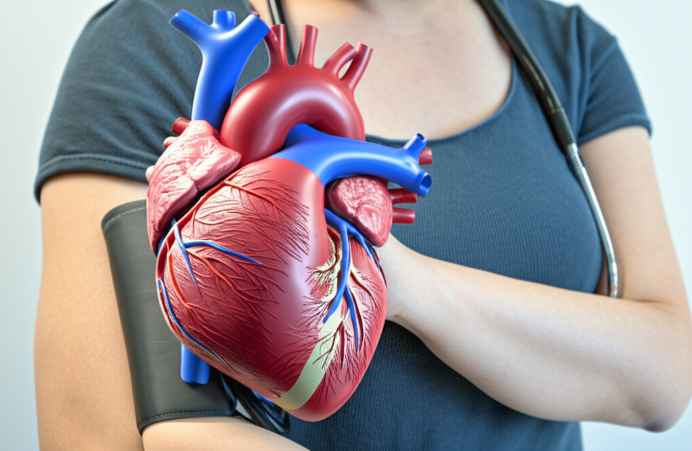

近期新聞報導聚焦高血壓的防治與相關健康議題，從飲食、生活習慣，到藥物治療等面向，提供了多樣的資訊。本文將針對幾則熱門新聞進行摘要與分析，希望能幫助讀者更全面地了解高血壓的預防與控制。
多則新聞提到飲食對於血壓控制的重要性。例如，一則新聞指出，除了減少鹽分攝取外，還可以透過調整尿液中的鈉鉀比例來控制血壓。而關於茶飲，一則新聞強調洛神花茶在降血壓、抗氧化等方面的優勢，甚至優於綠茶。另一則新聞則提醒，茶飲本身具有降血壓效果，低血壓者飲用前應謹慎。此外，還有網路傳言香蕉皮煮水可以降血壓，但國健署已澄清沒有相關證據。
分析： 飲食是控制血壓的重要一環，鈉、鉀平衡尤其關鍵。洛神花茶等天然飲品可能有輔助效果，但不能取代正規治療。民眾應避免聽信偏方，尋求專業醫療建議。
一則新聞報導了一個因睡眠呼吸中止症導致中風的個案，提醒民眾重視睡眠品質。該案例中，病人患有重度睡眠呼吸中止症，但未積極配合治療，最終導致中風。
分析： 睡眠呼吸中止症是高血壓的危險因子之一。打呼大聲、睡眠品質不佳者，應及早進行檢查，並積極配合醫生提出的治療建議，包括使用睡眠呼吸正壓儀器等，以降低中風等心血管疾病的風險。
多則新聞強調高血壓治療的重要性，並提醒民眾用藥安全。一則新聞指出，台灣有超過400萬高血壓患者，高血壓一直是國人十大死因之一。同時，也有新聞報導民眾誤認西藥傷腎而擅自停藥的案例，強調未控制好的血糖、血壓和血脂才是導致洗腎的殺手。此外，還有一則新聞提到，降血壓可能使全因癡呆風險下降15%。
分析： 高血壓是可控制的慢性疾病，正規治療能有效降低心血管疾病的風險。民眾應正確了解高血壓的治療方式，切勿自行停藥或聽信不實資訊，並定期追蹤檢查，與醫生共同制定適合自己的治療計畫。
高血壓是影響國人健康的重要議題。透過飲食控制、改善生活習慣、積極治療相關疾病，以及建立正確的用藥觀念，才能有效控制血壓，降低心血管疾病的風險，維護健康。民眾應重視高血壓的預防與治療，並定期進行健康檢查，及早發現問題，及早治療。